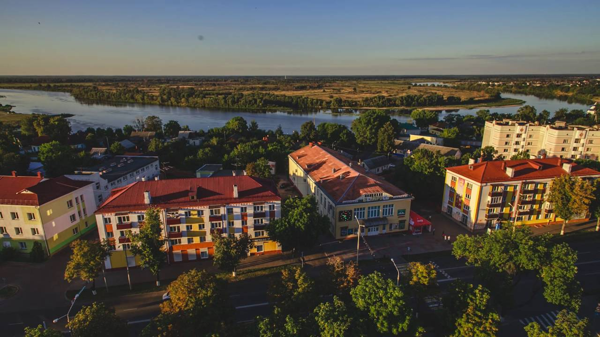
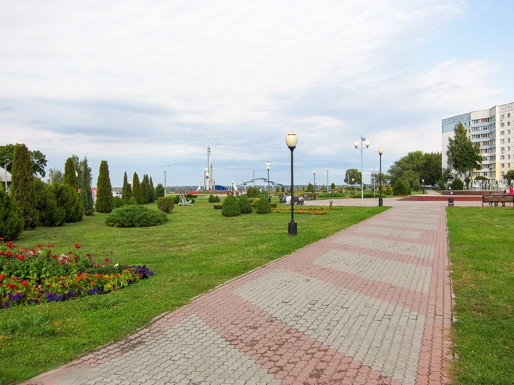

происхождение названия
Согласно распространенному мнению, топоним «Речица» возник от одноименной реки. В свою очередь река получила название от славянского слова «река».
история города
Первое упоминание о городе относится к 1214 году как о поселении в месте впадения реки Речица в Днепр. С 11 по 13 столетия Речица находилась под влиянием киевских и черниговских князей. Затем перешла под власть ВКЛ и в конце 14 столетия обзавелась укрепленным деревянным замком, впоследствии сожженным при казацких набегах. В 1511 году Речица одним из первых городов Беларуси получила Магдебургское право с утвержденным гербом. Толчок развитию города дала добыча нефти. Первые тонны «черного золота» были добыты в 1964 году, и промышленная добыча ведется до сих пор, что сделало город важным промышленным центром страны.

Часовня Святой Евфросинии Полоцкой
Мимо часовни Святой Евфросинии Полоцкой, что построена в 1995 году на высоком берегу Днепра в Речице, пройти невозможно.
Эта часовня, а на белорусском Капліца Святой Еўфрасінні Полацкай, просто зачаровывает и является одной из главных достопримечательностей города.
Вначале автор назвал свой монумент — Юбилейная часовня.
Но горожане быстро переименовали его на свой лад и стали называть — часовня Евфросинии Полоцкой.
Это не простое место. Оно историческое и часовня здесь построена не зря.
Оказывается, именно в этом месте, в далеком 1910 году остановилась эскадра пароходов, которая везла мощи преподобной Евфросинии Полоцкой из Киева в Полоцк. Там был установлен деревянный крест, на месте которого в недалеком прошлом и построили часовню.
После первого раздела Речи Посполитой город стал частью Российской империи. Для Гомеля начинается новый виток истории, когда императрица Екатерина II дарит его русскому полководцу Петру Александровичу Румянцеву-Задунайскому. Он начинает реконструкцию города, на месте старой крепости строит дворец. Его дело продолжает сын - канцлер Российской империи Николай Петрович Румянцев. Именно с этим именем связан подъем Гомеля, его второе рождение. Граф Румянцев 25 лет строил город своей мечты. Гомель не зря называют последним в истории городом, построенным частным владельцем на собственные деньги. Граф старался привить здесь все самое лучшее, что он видел в европейских городах во время своей дипломатической службы. В своих записях Николай Петрович называет город «мой любимый Гомель».
Высота часовни — 24 метра 24 сантиметра. Выполнена она из нержавеющей стали и латуни.
В основу композиции архитектора Агуновича Эдуарда Константиновича заложена следующая идея: четыре опоры ступенчато символизируют развитие жизни и мысли по спирали. В них по возрастающей вписаны лики 12-ти белорусских святых и просветителей.
Четверо из них — Епископ Полоцкий Мина, Епископ Полоцкий Дианисий, Кирилл Туровский и Елисей Лавришенский канонизированы как православной, так и католической церквями. в числе просветителей такие яркие личности, как Симон Будный, Василий Тяпинский, Симеон Полоцкий, Лев Сапега, Гавриил Белостокский, и конечно же Франциск Скорина и уроженец Беларуси первопечатник Иван Федоров. Венчает композицию ореол души Св. Е. Полоцкой, держащей крест, направленный к Богу. В центре часовни между опорами установлен крест из мореного дуба.
Эта композиция хорошо видна с разных точек города и находится на пересечении Набережной улицы с улицей Чапаева. Там большой сквер, скамейки. Летом много цветов. Место очень красивое.
Строительство было приурочено к нескольким важнейшим историческим датам. Тут и 1000-летие Крещения Руси, и 50-летие Победы в Великой Отечественной войне, подвигу воинов-интернационалистов и жертвам Чернобыльской катастрофы.
Открытие часовни состоялось 2 сентября 1995 г.
Бывшая почтово-телеграфная контора
Двухэтажное, Г-образное в плане здание с пластично решёнными фасадами сооружено в конце XIX — начале XX века как частный дом, который городская управа арендовала у владельца Августа Крегера под почтово-телеграфную контору. В пристройке к дому в начале 1912 года был открыт первый в Речице электротеатр «Модерн». В 1919 году здесь размещался Речицкий революционный комитет, возглавляемый Е. П. Мицкевичем. Впоследствии тут находилась детская музыкальная школа.
Пологая крыша по периметру ограждена несложной решеткой между невысокими кирпичными столбиками. К торцу основного фасада по ул. Советской примыкает пристройка с повторяющимися архитектурными деталями в отделке фасадов.
Сегодня в этом здании находится районный отдел культуры и эколого-культурный центр.

Городище Речица
Отмечено памятным знаком «Памятник археологии». Городище относится к эпохе Киевской Руси. В XIII столетии тут был детинец города, позже князь Витовт возвел деревянный замок, простоявший более двухсот лет. Там выявлен культурный пласт толщиной в 1,6 метра, найдена керамика XIII—XIV столетий, куски лепной посуды.
Это прямоугольная площадка размером 75×45 м, с западной, восточной и южной сторон укрепленная валами двухметровой высоты. С севера городище омывается рекой. С его западной и восточной сторон — глубокие рвы, в древности заполнявшиеся водой.
Свято-Успенский собор
История церквей и костелов Беларуси схожа – все они знали разные времена. Их закрывали, превращали в клубы и бары, оскверняли, но они потом снова возрождались, на радость верующим. Свято-Успенский собор в Речице тоже не избежал такой судьбы, но смог выстоять и до сих пор несет свет и веру в души прихожан.
Строительство этого собора началось в 1841 году. Правда, через три года недостроенное здание разрушилось. Целых двадцать лет храм был в таком виде. И только в 1864 году строительство снова возобновилось – благодаря деньгам одного минского купца. Но и тут собору не повезло: через два года купец разорился, а строительство снова прекратилось. Жители города вынуждены были просить помощи у минского губернатора Токарева, который выделил деньги на многострадальный храм. В 1872 году он был достроен и освящен.
Годы советской власти ничего хорошего собору не принесли. В 1934 году его закрыли, а еще через несколько лет превратили в «Дом социалистической культуры». Собор остался без куполов, его интерьер был полностью изменен, к храму пристроили деревянное здание. В 60-е годы помещение и вовсе стало бесхозным. Только в самом конце XX века - в 1999 году - собор вернули верующим. В этом же году прошло первое богослужение.
Сейчас Свято-Успенский собор - украшение города, храму присвоен статут историко-культурной ценности Беларуси. Это уже целый комплекс: рядом с основным зданием расположились церковная лавка и административно-хозяйственный блок, построена часовня для освящения воды. Эту часовню возвели в 2008 году на деньги прихожан. Административно-хозяйственный блок стал местом расположения воскресной школы, помещения для крещения, просфорни, а также рабочего кабинета настоятеля собора.
Свято-Успенский собор по праву гордится своим иконостасом. Он пятиярусный, включает двадцать четыре иконы. В 2011 году в храме появились два киота в честь святого Николая и Казанской Божьей Матери, а недавно в собор привезли иконы Блаженных Ксении Петербургской и Матроны Московской. За помощью можно обратиться и к своим – белорусским – святым: Евфросинье Полоцкой, Манефе Гомельской, Жировицкой Божией Матери, к святому праведному Иоанну Кормянскому.
Свято-Троицкий костел
Свято-Троицкий костел в Речице — яркий пример неоготической архитектуры начала XX века, один из наиболее выразительных памятников этого стиля в Беларуси. Костел был построен в 1903 году.
Впервые католический храм в Речице появился еще в 1634 году. Костел украшал город до 1756 года, когда построили новый деревянный Свято-Троицкий костел и монастырь при нем. В начале XIX века здесь жили около двадцати монахов. Обитель просуществовала до 1831 года, когда по всей Беларуси закрывались католические монастыри и храмы. Бездействующий костел стал потихоньку ветшать. Новый храм в Речице был построен в 1903 году.
В годы советской власти здание храма использовалось в качестве склада, электростанции и даже пивной. Потом здесь был витаминный бар. В 1998 году Свято-Троицкий костел признали памятником архитектуры XX века и включили в Государственный список историко-культурных ценностей, а через год вернули прихожанам. Здание было реконструировано, и с 2007 года костел является действующим.